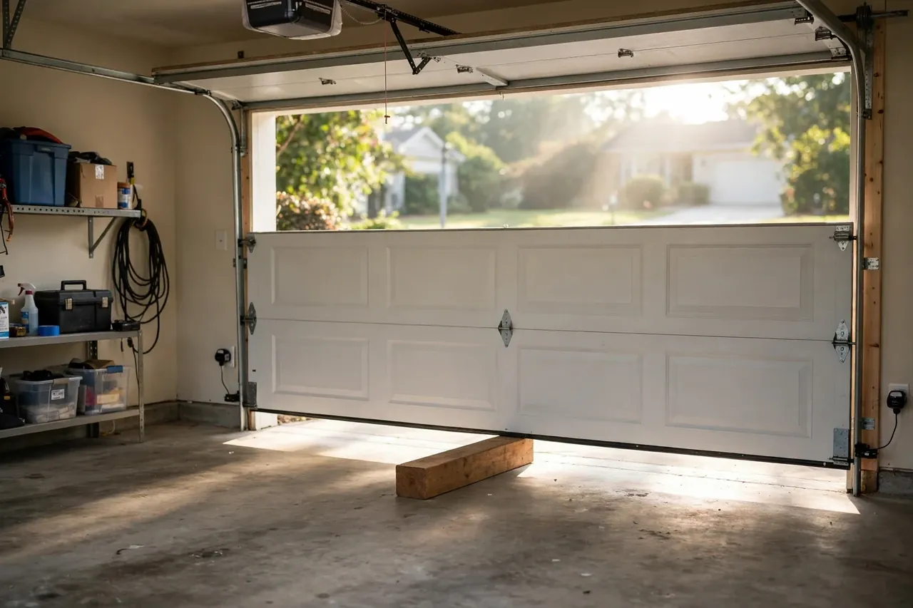

Your local team · Sunset Ridge
Garage Doors in Sunset Ridge, IL for Attached 1990s Garages
Sunset Ridge homes were built from 1994 to 2005, and their garages are attached, two- and three-car, and garage-forward, typical of the western subdivisions of Zion. Doors and openers from that build wave are now well into their replacement cycle, which is why spring, cable, roller, and opener faults are common repair topics here. Milwaukee Garage Doors Inc handles repair, installation, springs, openers, panels, off-track work, and maintenance in Sunset Ridge. Call (224) 842-7761. The business is open 24 hours, every day.
Local knowledge
Sunset Ridge Homes, Their Builder, and Their Garage Doors
Sunset Ridge is a single-family subdivision in western Zion, north of 21st Street and east of Green Bay Road, built between 1994 and 2005 by J. Maki Construction. Parcel data counts 228 properties, and a 2012 snapshot recorded an average year built of 1997 and an average home size of 1,620 square feet. The garage pattern is attached and garage-forward: an attached three-car garage appears in listing examples, and attached two- to three-car garages are the expected pattern for homes of this era. That puts original doors and openers from the 1990s build wave into replacement-cycle age, so the work that matters most here is springs, cables, rollers, opener controls, and sections that have taken twenty or more winters. No homeowners association was evidenced in the records read for Sunset Ridge.

Services available in Sunset Ridge
Garage Door Services Available Across Sunset Ridge
The eight services below cover the full range of garage door work for Sunset Ridge homes, from a spring that has snapped to a door that needs replacing outright. The pattern here is consistent: attached garages, doors and openers from the mid-1990s to mid-2000s, and hardware that has aged together. Each service page explains the work in full; the notes here tie it to what Sunset Ridge homes actually have.
01
Garage Door Repair
Sunset Ridge doors date largely to the 1994-2005 build wave, so repair calls here usually involve hardware of a similar age. Across 228 properties built by J. Maki Construction between 1994 and 2005, repair work starts with the symptom and works through the hardware that controls the door’s travel. Springs, cables, rollers, hinges, tracks, and openers are each checked, since a door approaching thirty years old can fail in more than one place.
View service 02Garage Door Installation & Replacement
With an average year built of 1997 in a 2012 snapshot, many Sunset Ridge doors are original to homes now approaching thirty years old. Openings here are measured as built before a replacement is considered, including header, jambs, and headroom. The new door, springs, cables, and opener are matched to that opening and to how the garage is used.
View service 03Garage Door Spring Replacement
Springs from the 1990s build wave in Sunset Ridge have carried their doors through two decades or more of daily use. Springs are judged by inspection and by how the door lifts by hand. A heavy door points to the springs first, and the opener is not used to force it.
View service 04Garage Door Opener Repair & Installation
Openers installed when Sunset Ridge homes were built are now of an age where gears, limits, and sensors commonly need attention. Openers of the age installed when these homes were built are checked from the motor unit and rail through the remotes, keypad, and sensors at the base of the tracks. The sensor and auto-reverse tests are part of the same visit, so the safety features are confirmed before regular use resumes.
View service 05Garage Door Panel Replacement
A 2012 snapshot put the average Sunset Ridge home at 1,620 square feet, and attached garage doors here face the street, so a damaged section is visible as well as functional. On attached doors facing the street, a dented, cracked, or rotted section is assessed against the door as found, including the model, the section size, and the sections around the damage. A replacement section that matches in size and profile keeps the door travelling true and looking consistent from the street.
View service 06Garage Door Off-Track, Cable & Roller Repair
Attached two- to three-car doors in Sunset Ridge run on long tracks with multiple rollers, so a single worn roller or frayed cable can affect the whole travel path. The full travel path is traced. The alignment, cable drums, rollers, and spring balance are looked at as one system, since a worn part on a long track loads the rest.
View service 07Garage Door Maintenance & Tune-Up
For doors approaching thirty years old in Sunset Ridge, a regular check of hardware, balance, seals, and safety features is the practical way to catch wear early. The check covers lubrication, hardware, balance, seals, and the sensors and auto-reverse. That routine finds wear in rollers, hinges, and seals while it is still small, rather than after the door has stopped.
View service 08Emergency Garage Door Repair
A stuck-open attached garage door in Sunset Ridge leaves the front of the home open, which is why the phone line matters at any hour. Milwaukee Garage Doors Inc is open 24 hours, every day, and the phone number is (224) 842-7761. A street-facing door stuck open is left where it is, and the call describes what the door is doing and whether it will move at all.
View serviceHow the work is approached
How We Run Garage Door Work in Sunset Ridge
Garage door work in Sunset Ridge starts from the subdivision itself: attached garages, a 1994-2005 build wave, and doors and openers that have aged together. The approach below is the same sequence for every visit, applied to the opening and hardware in front of us. Nothing here depends on a claim about arrival times or parts carried; it is a description of how the work is checked.
Check the opening before the door
Sunset Ridge openings date to the late 1990s and early 2000s, and headers and jambs settle over time. The opening is measured and checked for square before a new door is ordered, so the door runs true in the frame it actually has rather than the frame it had when built.
Tracks, rollers, and hinges age together
On an attached two- or three-car door, rollers and hinges carry the door through every cycle. Worn rollers, tired hinges, and a track that has drifted out of alignment show up as noise, jerky travel, or a door that binds partway. The full travel path is checked, not just the noisy part.
Seals and the threshold in cold weather
Bottom seals harden with age and cold, and a worn seal lets in cold air and meltwater. In winter, meltwater can refreeze and bond a door to the floor, so the seal and the threshold are checked together, and a frozen door is never forced with the opener.
Sensors and auto-reverse, every time
Federal rules require entrapment protection on residential automatic openers: an inherent reversal system plus a secondary entrapment protection device (such as photoelectric sensors or an edge sensor) or a constant-contact control. Sensors at the base of the tracks are checked for alignment and dirt, and the auto-reverse is tested. Test sensors and auto-reverse regularly.
Springs and cables under tension
Springs and cables work under tension and carry the door's weight. A broken spring or a frayed cable makes the door heavy and uneven, and spring and cable work is left to a technician. If a spring has snapped, stop using the door and call (224) 842-7761.
Openers of the same era as the door
In Sunset Ridge, the opener is often as old as the door it lifts. Gears wear, travel limits drift, and remotes and keypads fail with age. An opener assessment looks at the motor, the drive, the controls, and the safety features together before deciding between repair and replacement.
Common local problems
Common Garage Door Problems in Sunset Ridge
A spring that snaps after decades of cycles
A door that reverses before it closes
Rollers and hinges worn noisy over time
A door that sticks at the floor in cold weather
Warning signs
Signs Your Sunset Ridge Garage Door Needs Attention
A loud bang, then a door that will not lift
That bang is often a broken spring. The door becomes heavy, and running the opener against it can damage the opener. Stop using the door and call (224) 842-7761.
The door reverses for no clear reason
Dirty or misaligned safety sensors are a common cause, and a drifting opener force setting is another. Both are safety matters, since the door should reverse when it meets an obstruction and should not reverse when the path is clear.
The door hangs crooked or leaves its track
A frayed cable or a spring failing on one side lets the door drop unevenly, and an uneven door can jump its track. Do not force a crooked door; it needs the cables, drums, springs, and track alignment checked together.
Grinding, rattling, or jerky travel
Dry or worn rollers, tired hinges, and a track out of alignment are the usual causes of new noise. Noise is the symptom; the wear behind it is what needs attention before a roller seizes or a hinge fails.
Cold air, meltwater, or a door frozen to the floor
A hardened bottom seal or a worn perimeter seal lets cold air and water in around the door. In cold weather the door can freeze to the slab, and forcing it with the opener strains the opener. The seal and threshold are the place to start.
Area context
What Shapes Garage Door Work in Sunset Ridge
Sunset Ridge is best understood through its build wave and its garage pattern, both of which shape the work its homes need. The six notes below stick to what the records show: the builder, the era, the location anchors, and the general topics that follow from them.
Built 1994-2005 by J. Maki Construction
Sunset Ridge homes were built between 1994 and 2005, with J. Maki Construction named as the builder for the late 1990s and early 2000s. A 2012 snapshot recorded an average year built of 1997. Doors and openers from that wave are now in replacement-cycle age.
Attached two- to three-car garages
An attached three-car garage is evidenced in listing examples, and attached two- to three-car garages predominate. The door faces the street and carries the daily coming and going of the household, so its hardware cycles often.
North of 21st Street, east of Green Bay Road
Sunset Ridge sits north of 21st Street and east of Green Bay Road, in the western part of Zion. It belongs to the West Zion sector, the parent area for the western subdivisions, which is linked below with the nearby areas.
228 properties in parcel data
Parcel data counts 228 properties in Sunset Ridge. The subdivision is large enough that its homes share an era and a garage pattern, which is why the same topics recur: springs, openers, seals, and sections.
Cold winters and general winter checks
Zion winters are cold, and cold weather stiffens springs, makes seals brittle, and strains openers. Those are general effects, not figures for Sunset Ridge, and they are the reason winter checks focus on seals, springs, and the safety features.
No homeowners association evidenced
No homeowners association was evidenced in the records read for Sunset Ridge. That is a statement about the evidence, not a claim about any individual home; owners should still check their own documents before changing a door.
Sunset Ridge service coverage
Garage Door Help in Sunset Ridge, Zion, IL
Sunset Ridge is one of the western subdivisions of Zion, and this page covers garage door work for its homes. The chips below name the location anchors and the sector parent from the research, not a boundary. Milwaukee Garage Doors Inc is based at 2016 Horizon Ct, Zion, IL 60099, and is open 24 hours, every day.
21st StreetGreen Bay RoadWest ZionZion, IL 60099
Milwaukee Garage Doors Inc2016 Horizon Ct, Zion, IL 60099, United States
Common work
Garage Door Work Common in Sunset Ridge
Spring work on doors from the 1990s build wave
Doors built in the 1990s in Sunset Ridge have springs that have cycled for decades. Spring work here is general replacement-cycle work: a broken spring makes the door heavy, and the opener should not be used to force it. Springs and cables are handled as tensioned parts, by a technician.
Opener and sensor work on original openers
Openers from the original build wave can develop gear wear, drifting limits, and sensor trouble. The general pattern is a door that reverses, stops short, or ignores a remote, with the sensors and auto-reverse checked as part of any opener work.
Seals, rollers, and sections after many winters
Bottom seals harden, rollers wear, and sections take knocks over twenty or more winters. The common work is seal renewal, roller and hinge attention, track alignment, and single-section replacement where damage is confined to one panel.
Notes from local customers
What Customers Say
The crew was proficient and competent, and they made my garage seem better than before.
Premium components were used to rebuild my garage door for reasonably low running cost.
I had a thorough safety check on my garage door, the technician was very detailed.
Plan for the season
How Sunset Ridge Seasons Affect Your Garage Door
Spring: a check after winter
After a cold winter, a spring check can cover the bottom seal, the moving hardware, and a test of the sensors and auto-reverse. Winter strain shows up as hardened seals and tired springs, and spring is a practical time to look.
Summer: noise and opener checks
Doors get used often in summer, and worn rollers and hinges show up as grinding or rattling. A summer check can also cover remotes, keypads, and opener limits before the colder months return.
Fall: seals and springs before the cold
Before cold weather arrives, the bottom seal and the spring and cable condition are worth a look. A seal that no longer meets the floor lets in cold air, and a spring near the end of its life is better found before winter.
Winter: ice, sticking, and spring caution
In winter, meltwater can refreeze at the threshold and bond a door to the floor. Never force a frozen door with the opener, and if a spring snaps, stop using the door and call (224) 842-7761.
Nearby service areas
Nearby Zion Areas
The areas below are other Zion areas with their own pages, including the West Zion sector parent. They share the western-subdivision pattern of attached, garage-forward homes, though each has its own build era and evidence.
Before you hire
Questions to Ask a Garage Door Company in Sunset Ridge
Will you test the safety reverse and sensors before you leave?
How do you handle springs and cables, given the tension they carry?
Do I need a City of Zion permit for this work, and how do I check?
What should I tell you about the door when I call?
Will you check the tracks, rollers, and hinges as well as the opener?
Trust and compliance
Codes and Safety in Zion
Adopted codes in Zion
Zion has adopted the 2021 International Building Code and 2021 International Residential Code, effective January 1, 2025, with local amendments.
State licence position
Illinois does not issue a statewide licence covering garage-door work; the only general building-trade contractor licences issued statewide are for roofing and plumbing. Whether City of Zion contractor registration applies to garage-door contractors was not confirmed — ask the City of Zion Building Department.
Safety sensors and auto-reverse
Federal rules (16 CFR Part 1211, UL 325) require residential automatic garage door operators to have entrapment protection: an inherent reversal system plus a secondary entrapment protection device (such as photoelectric sensors or an edge sensor) or a constant-contact control. Test sensors and auto-reverse regularly.
Battery backup
No Illinois battery-backup mandate for garage door openers was found. Battery backup is an opener feature to discuss, not a requirement stated here.
Permits: ask the City first
Whether a City of Zion permit is required for garage-door work, and any fee, was not confirmed on a City source. Contact the City of Zion Building Department, 2828 Sheridan Road, (847) 746-4018, before work begins.
Springs and cables need care
Springs and cables carry high tension. Leave spring and cable work to a technician, and do not remove bottom brackets or fasteners holding spring and cable parts.
Older openings vary
Older garages can have openings that differ from current standard sizes. Measure the opening, headroom and side room before ordering a door so the replacement fits the opening as built.
When to stop using a door
If a spring breaks, a cable frays or the door drops unevenly, stop using the door and keep people clear of it. Call (224) 842-7761 and describe what the door is doing.
Sunset Ridge homes were built from 1994 to 2005, with an average year built of 1997 in a 2012 snapshot. Doors and openers from original construction would now be around twenty to thirty years old, though replacement history varies by home, and many doors will already have been replaced.
J. Maki Construction is named as the builder for Sunset Ridge homes in the late 1990s and early 2000s. Parcel data counts 228 properties in the subdivision, north of 21st Street and east of Green Bay Road.
Attached garages predominate in Sunset Ridge. An attached three-car garage is evidenced in listing examples, and attached two- to three-car, garage-forward homes are the expected pattern for this 1990s subdivision.
Whether a City of Zion permit is required for garage-door work, and any fee, was not confirmed on a City source. Contact the City of Zion Building Department, 2828 Sheridan Road, (847) 746-4018, before work begins.
Stop using the door and do not force it with the opener, especially if you heard a loud bang, which often means a broken spring. Call Milwaukee Garage Doors Inc at (224) 842-7761. The business is open 24 hours, every day.
Need garage door help?
Need Garage Door Help in Sunset Ridge?
If your Sunset Ridge garage door is stuck, noisy, off its track, or reversing without cause, call and describe what it is doing. Attached doors from the 1994-2005 build wave usually need spring, opener, seal, or section work, and the call is the way to start. Milwaukee Garage Doors Inc is open 24 hours, every day, at (224) 842-7761.
Start with the basics
Call Milwaukee Garage Doors Inc
Call (224) 842-7761 for garage door repair, installation, springs, openers, and maintenance in Sunset Ridge and across Zion. Milwaukee Garage Doors Inc is open 24 hours, every day. Tell us what the door is doing, and whether it is stuck open, stuck closed, off its track, or making a new noise.
CALL(224) 842-7761
HOURSOpen 24 hours, every day